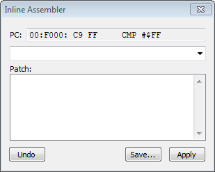
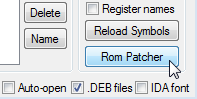
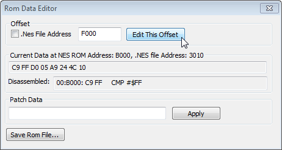
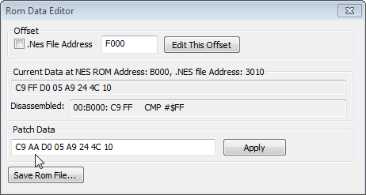

Выбери опцию из списка, чтобы посмотреть способы отредактировать код/данные в эмуляторе FCEUX.
Hex Editor
Способ для тех, кто знает опкоды инструкций и может записывать код при помощи байтов. Чтобы отредактировать код (и данные тоже), нужно знать местоположение инструкции из NES Memory в ROM File. Адрес инструкции в ROM File всегда отличается от адреса в NES Memory.
Чтобы не вычислять самому адрес в ROM File и сразу перейти к адресу, где находится интересующая инструкция, нужно во время паузы эмулятора кликнуть правой кнопкой по серой полоске в окне Debugger'а слева от адреса инструкции. Автоматически откроется окно Hex Editor, и тебя перекинет на местоположение этой инструкции в ROM File.

После перехода в ROM File ты увидишь байты #$C9 и #$FF, из которых состоит инструкция CMP #$FF, а также прочие байты, из которых состоят нижестоящие инструкции. Теперь ты можешь отредактировать код через Hex Editor по своему усмотрению, а затем кликнуть на Debugger и проверить свои изменения.
Если эмулятор не находится на паузе, правый клик ни к чему не приведет.
Если окно Hex Editor было свернуто перед кликом, оно не развернется. После ручного разворачивания окна выяснится, что оно все же практически правильно перешло на нужный адрес в ROM File, нужно лишь прокрутить окно вверх на 1 строчку.
Если после клика ничего не произошло, проверь стоит ли эмулятор на паузе и развернуто ли окно Hex Editor.
Если кликнуть на адресах $0000-$7FFF, Hex Editor откроется в NES Memory, а не ROM File.
Чтобы отредактировать считываемые кодом данные, например данные таблицы из инструкции LDA $89AB,X, кликни по адресу $89AB, перейди по нему через кнопку Seek To, затем кликни правой кнопкой слева от адреса $89AB и поменяй в Hex Editor'е байты на свои.
Inline Assembler
Этот способ редактирования кода (но не данных) подходит для тех, кто не заучивает опкоды и хочет записывать инструкции текстом, а не байтами. Гораздо более удобный способ редактирования кода текстом - использовать другие ассемблеры, например ca65.
Окно будет полезно для редактирования адреса в инструкциях условного перехода при переходе в обратную сторону.
Окно Inline Assembler вызывается в Debugger'е левым кликом по серой полоске слева от адреса инструкции. Это работает только на адресах $8000-$FFFF и только во время паузы эмулятора.

Вверху окна показан начальный адрес вместе с инструкцией и ее байтами (этот текст можно выделять и копировать). По этому адресу будет начинаться перезапись инструкций. Синтаксис у вводимых инструкций точно такой же, как они выглядят в Debugger'е, за тем исключением, что не обязательно вводить инструкции и байты заглавными буквами, а также лишний ноль слева у байтов можно опускать.
При ошибке синтаксиса, а также если будет неправильно введен адрес для инструкции условного перехода из-за превышения лимита адреса, ты услышишь системный звуковой сигнал, а в названии окна будет сказано *Syntax Error*.
За 1 раз можно ввести 1 инструкцию, затем нажми клавишу Enter для подтверждения ввода. Введенная инструкция отобразится в списке, а вверху окна будет показан следующий доступный адрес, байты и сама инструкция.

Когда закончишь вводить инструкции, нажми кнопку Apply, а затем закрой окно и сверься с Debugger'ом.
Кнопка Undo отменяет ввод инструкций по очереди, начиная с последней из списка. По-другому отредактировать список не получится.
После использования Inline Assembler изменения в ROM File не выделяются красным цветом, и эти изменения нельзя отменить через Ctrl + Z. Сохранить изменения нужно в Hex Editor'е во вкладке File.
Кнопка Save в окне Inline Assembler предположительно должна сохранять изменения в файле без необходимости сохранять через Hex Editor, но, по-видимому, она не работает.
ROM Data Editor
Этот способ редактирования кода и данных является запасным, и в лучшем случае подходит для редактирования лишь одного-двух байтов. Гораздо удобнее пользоваться Hex Editor'ом и Inline Assembler'ом.
Окно ROM Data Editor открывается в Debugger'е кнопкой ROM Patcher. Предварительно желательно скопировать в буфер обмена адрес, по которому нужно отредактировать байты.

В окне ROM Data Editor вводишь адрес NES Memory в поле ввода вверху и жмешь кнопку Edit This Offset.

Если это адрес из ROM File, предварительно нужно поставить галочку .Nes File Address.
В поле Current Data отображены 8 байтов, которые находятся начиная с введенного адреса. Если требуется изменить лишь какой-то из этих байтов, можно скопировать всю строчку целиком, вставить в нижнее поле ввода, а затем подменить необходимый байт, например заменив #$FF на #$AA.

Всю строчку копировать не обязательно, достаточно было скопировать байты #$C9 и #$FF. Байты не обязательно записывать заглавными буквами.
В поле ввода помещается не более 30 символов, то есть максимум можно записать 15 байтов без пробелов.
В поле Current Data указан адрес $B000, а не $F000, потому что маппер NROM дублирует адреса $8000-$BFFF и $C000-$FFFF.
Чтобы применить свои изменения, нажми кнопку Apply. Если все получилось, то в поле Current Data ты увидишь свои изменения. А чтобы сохранить изменения в файле без необходимости сохранять их через Hex Editor, нажми кнопку Save Rom File.
После использования ROM Data Editor изменения в ROM File не выделяются красным цветом, и эти изменения нельзя отменить через Ctrl + Z.